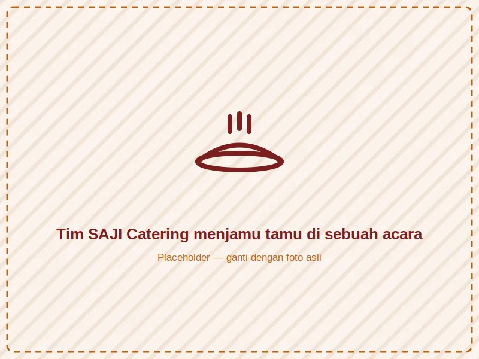
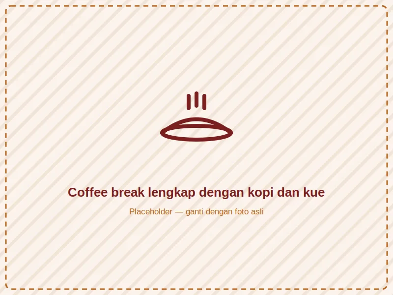
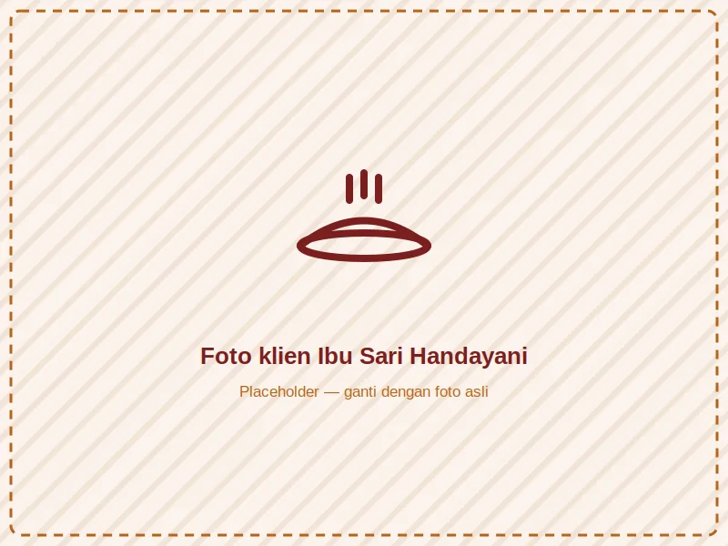
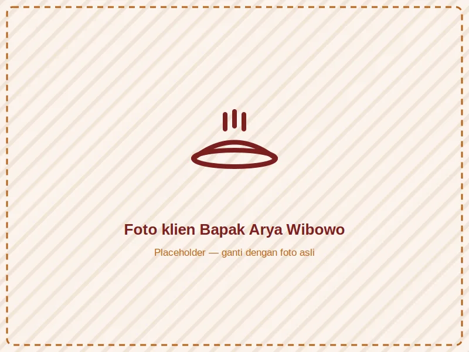
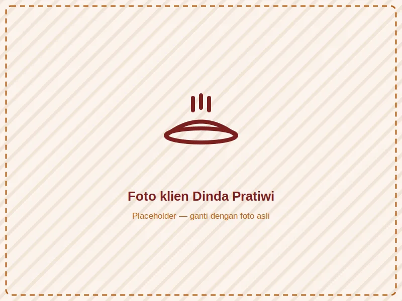
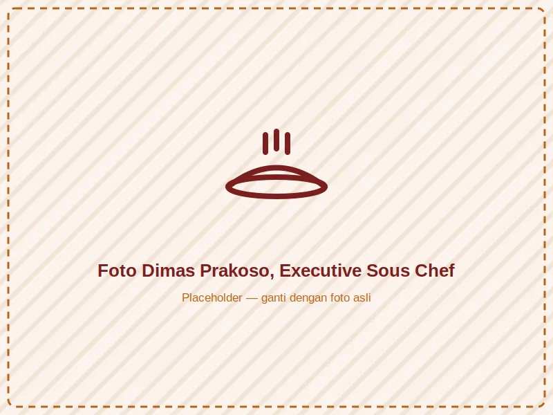

Sebelas tahun perjalanan meracik rasa, membangun kepercayaan satu acara demi satu acara.
SAJI Catering dimulai tahun 2015 dari dapur rumah Ibu Ratna di bilangan Kebayoran — awalnya hanya melayani hajatan tetangga dan arisan RT. Kualitas rasa yang konsisten membuat pesanan terus bertambah dari mulut ke mulut.
Kini, SAJI telah melayani lebih dari 500 acara: dari resepsi pernikahan mewah, gala dinner korporat multinasional, hingga syukuran sederhana keluarga. Namun satu hal tak berubah — setiap bumbu masih digiling segar, setiap menu masih dicicipi langsung sebelum dikirim.

Dikenal bukan hanya karena rasa, tapi karena konsistensi, integritas, dan ketulusan dalam setiap sajian yang kami hadirkan untuk momen penting pelanggan.
Menggunakan bahan berkualitas, memberdayakan petani & pemasok lokal, serta terus berinovasi pada menu tanpa meninggalkan cita rasa akar nusantara.
Bahan baku selalu dicek dan dipilih langsung oleh tim quality control sebelum masuk dapur.
Kontrak jelas, harga transparan, tanpa biaya tersembunyi di kemudian hari.
Terus bereksperimen memadukan resep klasik dengan sentuhan penyajian modern.
Disiplin jadwal produksi & pengiriman, karena kami tahu acara Anda tak bisa menunggu.
Standar higiene ketat di setiap tahap, dari belanja bahan hingga penyajian di venue.
Tim kami dilatih untuk melayani dengan hati, bukan sekadar menjalankan tugas.
SAJI berdiri dari dapur rumahan di Kebayoran, melayani hajatan tetangga sekitar.
Ekspansi ke dapur produksi pertama & mulai melayani acara korporat.
Meraih sertifikasi Halal MUI dan PIRT resmi untuk seluruh lini produk.
Melewati 500 acara terlayani, dari pernikahan hingga gala korporat.
Membuka dapur cabang kedua untuk melayani area Jabodetabek lebih luas.




Seluruh proses produksi telah tersertifikasi halal resmi dari MUI.
Terdaftar resmi sebagai industri rumah tangga pangan yang legal & diawasi.
Seluruh tim dapur menjalani pelatihan keamanan pangan standar HACCP.
Perlindungan asuransi untuk keperluan katering skala besar & korporat.